TSF4 - Le télésiège du Chéry Nord
Les Gets et le versant nord du Mont Chéry
Les Gets est un village de Haute-Savoie installé au col du même nom, entre la vallée du Giffre et la Dranse de Morzine. Son nom vient du patois désignant un couloir de descente du bois, matériau resté central dans l'architecture des chalets du village. La station de ski naît en 1936 avec l'ouverture de son premier téléski, et s'adresse aujourd'hui encore à une clientèle attachée au patrimoine et aux paysages traditionnels de montagne. Reliée aux Portes du Soleil, elle partage son domaine avec Morzine, à l'exception du secteur du Mont Chéry.
Le télésiège fixe du Chéry Nord relie le col de l'Encrenaz, accessible en voiture depuis Essert-Romand, au sommet du Mont Chéry. Il dessert l'intégralité des pistes de ce versant et permet notamment de remonter après avoir emprunté la piste rouge Marmottes ou les pistes noires Chevreuil et Mouflon.
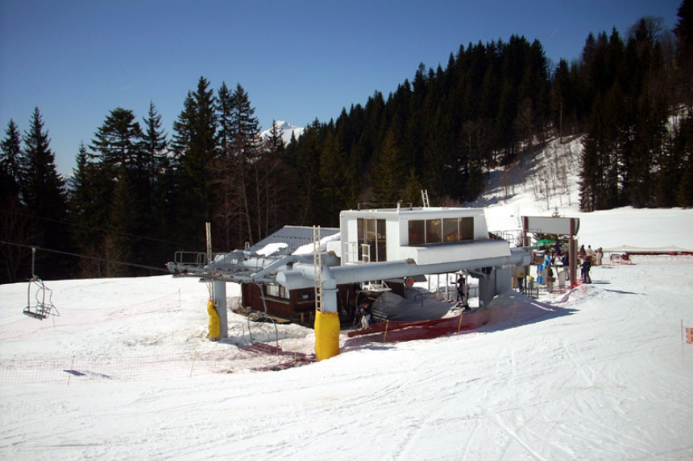
Situation
Le versant nord du Mont Chéry bénéficie d'une neige de bonne qualité. Ses pistes noires, jamais damées, en font un secteur particulièrement apprécié lorsque la neige est abondante, et il reste peu fréquenté comparé au reste du domaine. L'appareil a longtemps manqué de repose-skis, un équipement ajouté depuis. Il remplace en partie l'ancien téléski La Côte, aujourd'hui démonté, qui empruntait un tracé particulièrement raide sur la piste rouge. Le TSF4 du Chéry Nord est désormais la seule remontée mécanique de ce versant.
Localisation géographique
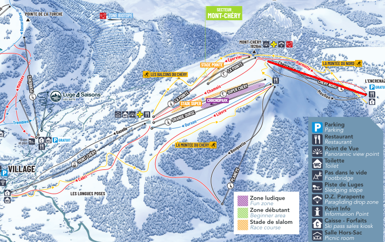
Caractéristiques
Construit par Skirail en 1986 pour le compte de la SAGETS, le télésiège du Chéry Nord est un télésiège à attaches fixes 4 places. Il fonctionne uniquement en saison hivernale, avec une capacité de 2000 personnes par heure à une vitesse d'exploitation de 2,3 m/s, pour un temps de trajet d'environ 8 minutes et 37 secondes.
La ligne développe 1188 mètres pour un dénivelé de 408 mètres, avec une pente moyenne de 37 % et une pente maximale de 60 %, répartie sur 16 pylônes. La montée s'effectue par la droite. La gare motrice, qui développe une puissance de 309 kW, est installée en aval, où se trouve également la tension de l'installation.
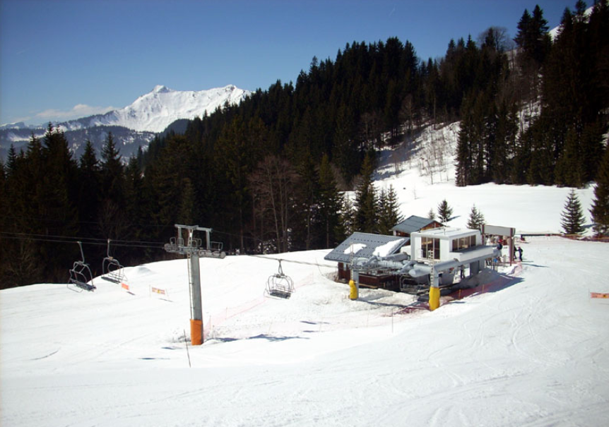
Ligne
La ligne du Chéry Nord développe 1188 mètres pour un dénivelé de 408 mètres, avec une pente moyenne de 37 % et une pente maximale de 60 %. Elle est portée par 16 pylônes.
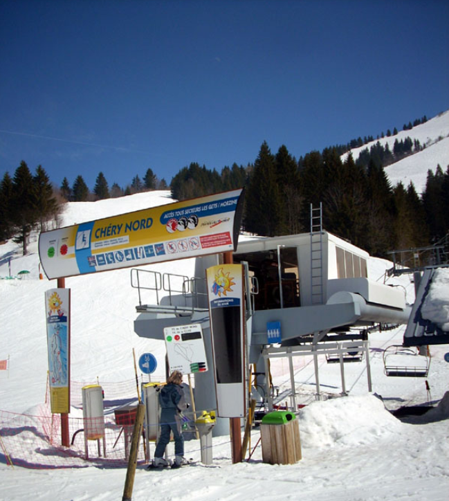
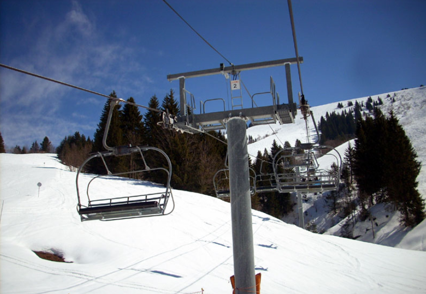
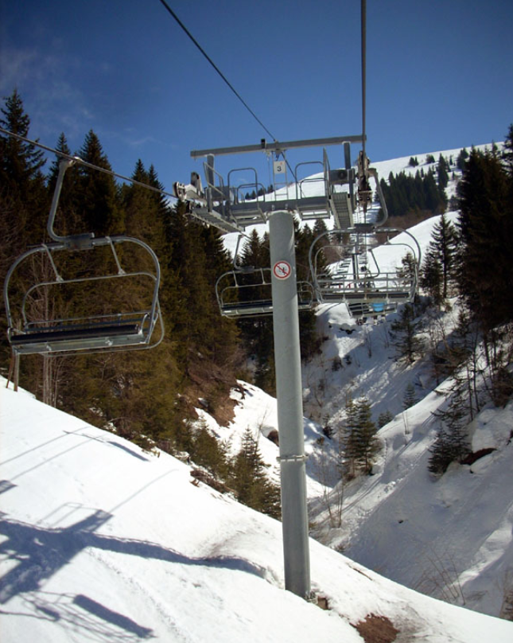
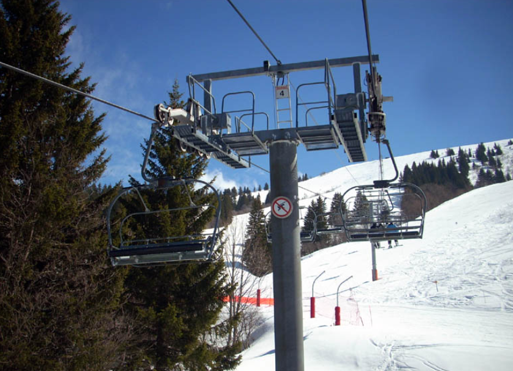
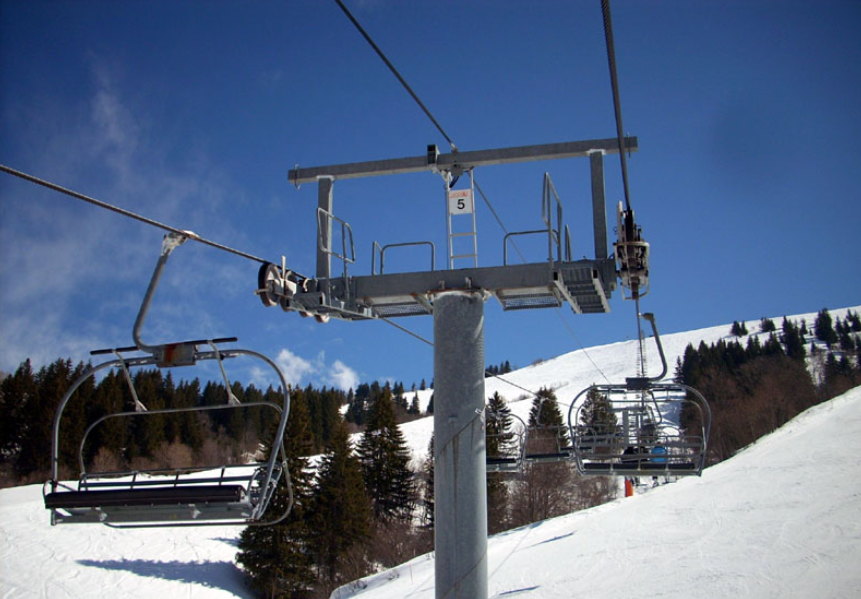
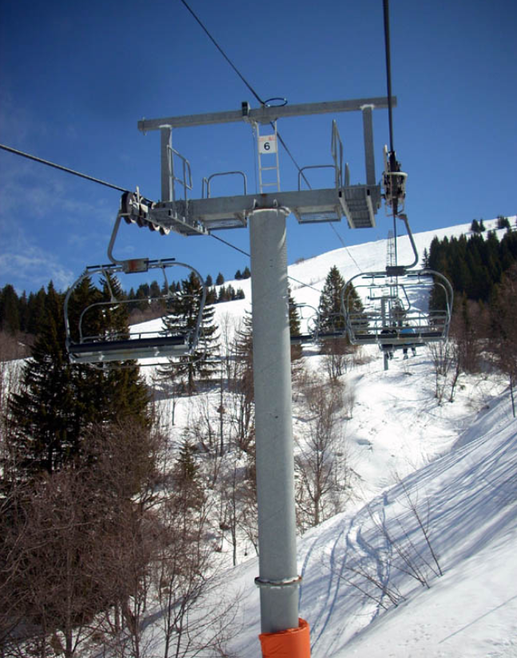
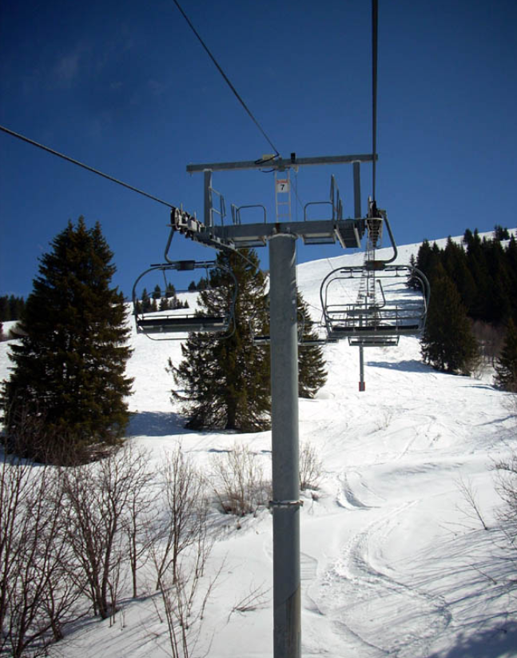
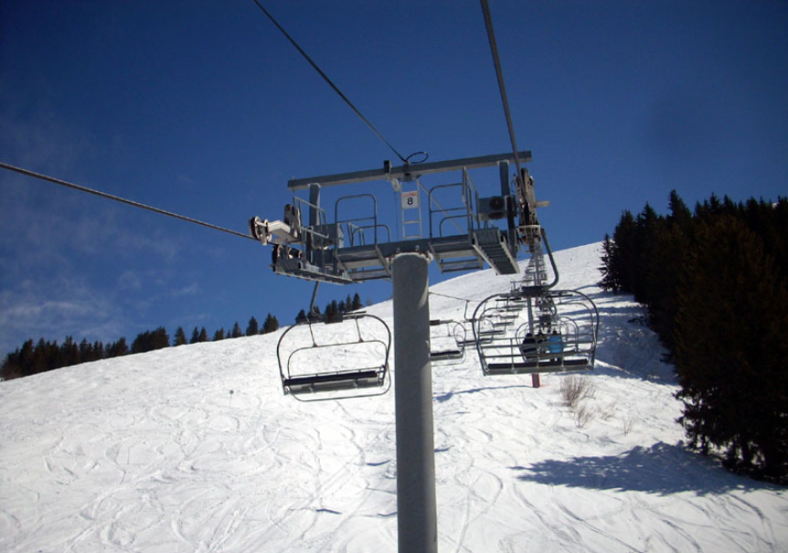
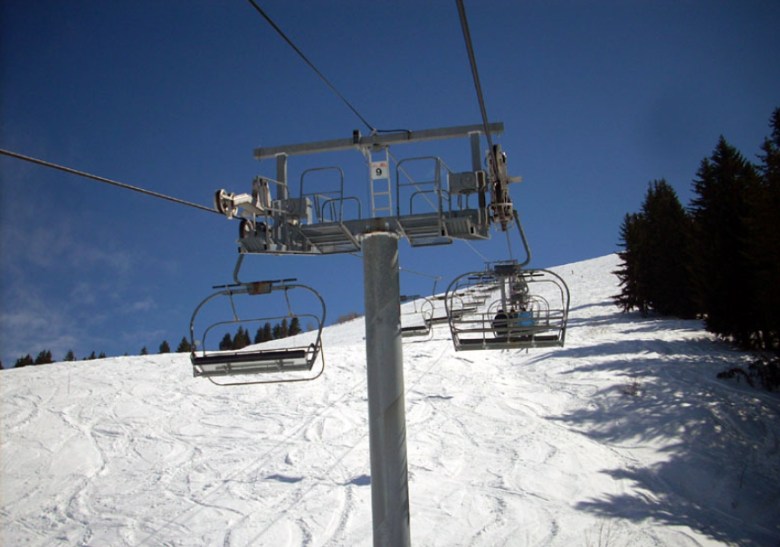
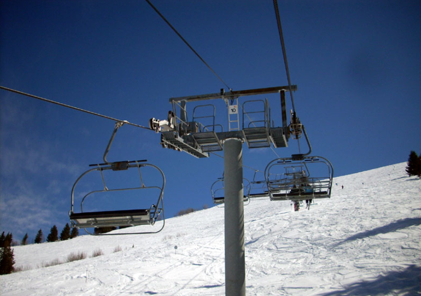
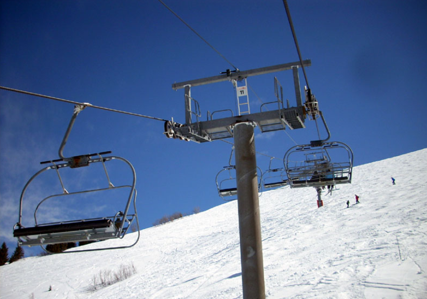
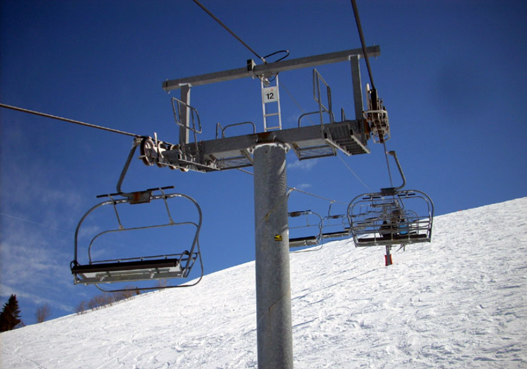
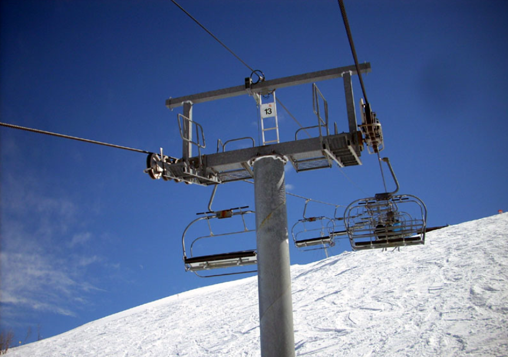
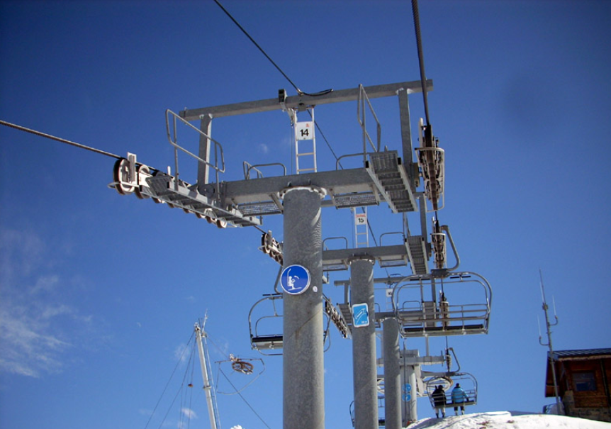
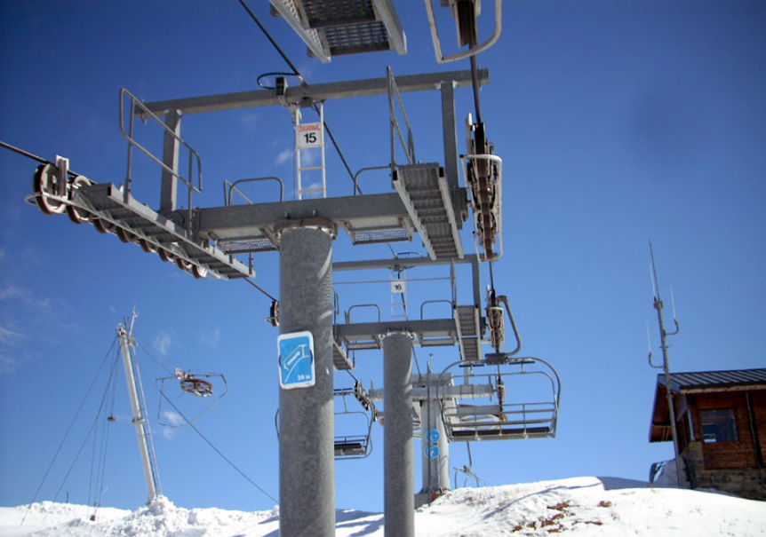
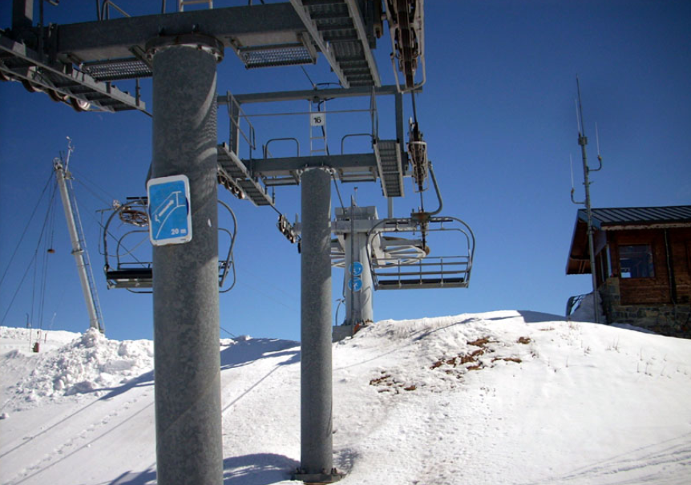
Gare amont
La gare amont du télésiège du Chéry Nord est de type retour, assurant l'entraînement du câble en aval. Le débarquement s'effectue au sommet du Mont Chéry, point de départ des pistes du versant nord.
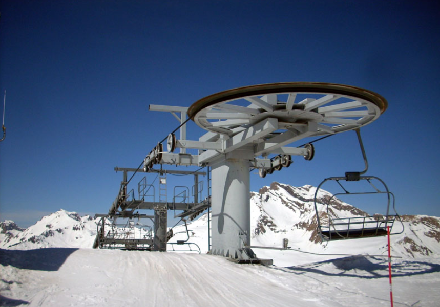
Conclusion
Construit en 1986 par Skirail, le télésiège du Chéry Nord reste à ce jour la seule remontée mécanique du versant nord du Mont Chéry. Il continue de desservir un secteur skié dans des conditions naturelles, apprécié pour la qualité de sa neige et sa faible fréquentation.